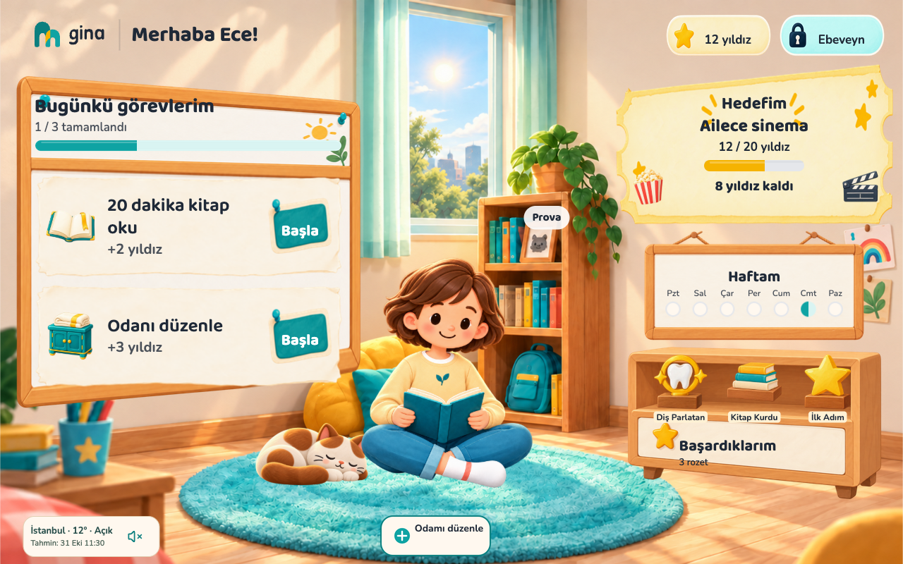
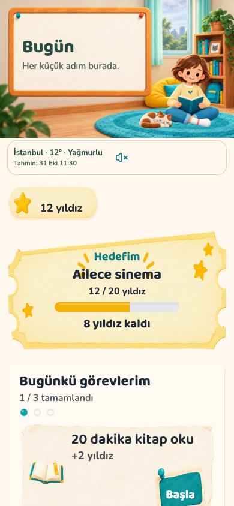
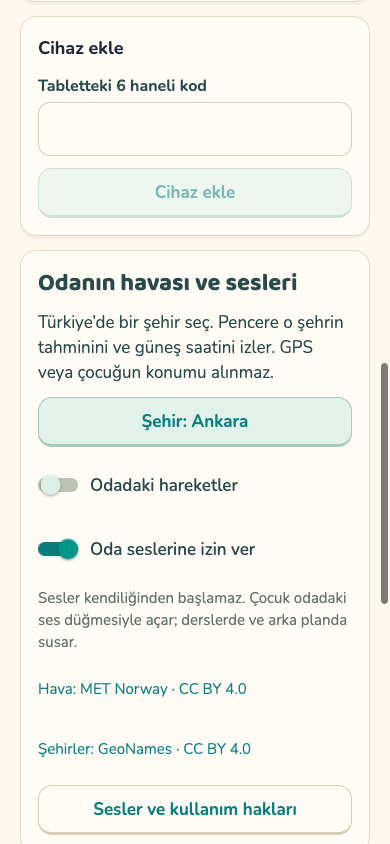
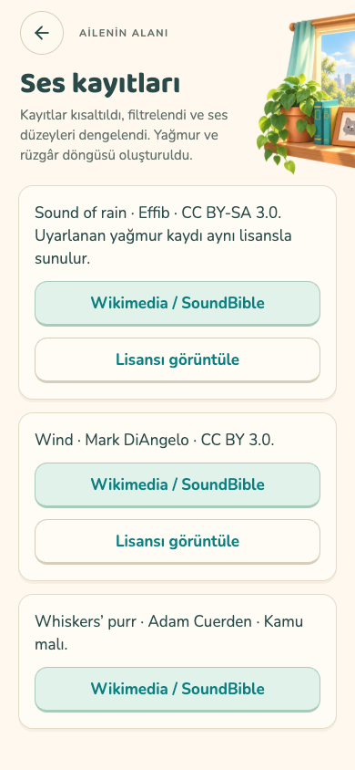

GINA · V5 · 31 EKİM 2026Aynı oda, günün farklı ışıkları.
Aşağıdakiler maket değil, uygulamanın 1280×800 ve 390×844 boyutlarında alınmış görüntüleridir. Test için şehir, saat ve hava yanıtları kontrollü verilerle sağlandı; demo veritabanı değiştirilmedi.

Gündüz · İstanbul için kontrollü açık hava tahmini.
Hareketi gör
Camın arkasındaki yağmurun gerçek uygulama kaydı. Video sessizdir; pet bu teslimde statik kalır.
Telefon ve veli denetimi

Telefon · hava bilgisi ve 48 dp ses düğmesi

Veli · şehir seçimi, hareket ve ses izni

Lisans ve kaynaklar uygulama içinde
Tamamlanan: hava ve ses sistemi.Güneş hesabı, yedi hava/ışık görünümü, eski tahmin uyarısı, sessiz başlangıç, kedi mırıltısı, yağmur/rüzgâr kayıtları; arka plan, ders ve hareketi azalt kontrolleri. Uygulamadaki petler hâlâ statik. Sonraki çalışmada üretilen ilk kedi uyku/esneme örnekleri ayrı inceleme sayfasında; kedi onayı sonrasında üretilen köpek, maymun ve aslan yavrusu paketinde altı yeni klip var.
Eşleme ve dürüst sınırlar · Doğrulama kaydı · PR #28